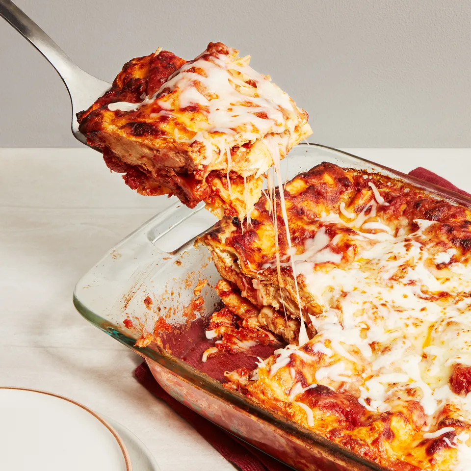

Home
Lasagna

Homemade Lasagna
This is my mom's special homemade lasagna recipe with a meaty, made-from-scratch tomato sauce and a deliciously
cheesy filling. A more traditional homemade lasagna filling would be made with ricotta but my mom's recipe calls for
a blend of small-curd cottage cheese and Parmesan. I have found none better anywhere. Serve with a leafy green salad
and crusty garlic bread.
Ingredients
- Meat
- Onion
- Canned tomatoes
- Fresh herbs
- Sugar
- Spices and seasonings
- Noodles
- Cheese
- Eggs
Steps
- Sauté onions and garlic in olive oil until softened.
- Add ground beef and cook until browned.
- Add canned tomatoes, fresh herbs, sugar, and spices. Simmer for 1 hour.
- Boil noodles until al dente.
- Combine cheese and eggs.
- Layer noodles, meat sauce, and cheese mixture in a baking dish.
- Bake at 375°F for 30 minutes.
- Remove the foil and bake for another 10-15 minutes to brown the cheese
- Let the lasagna rest for 10 minutes before slicing and serving